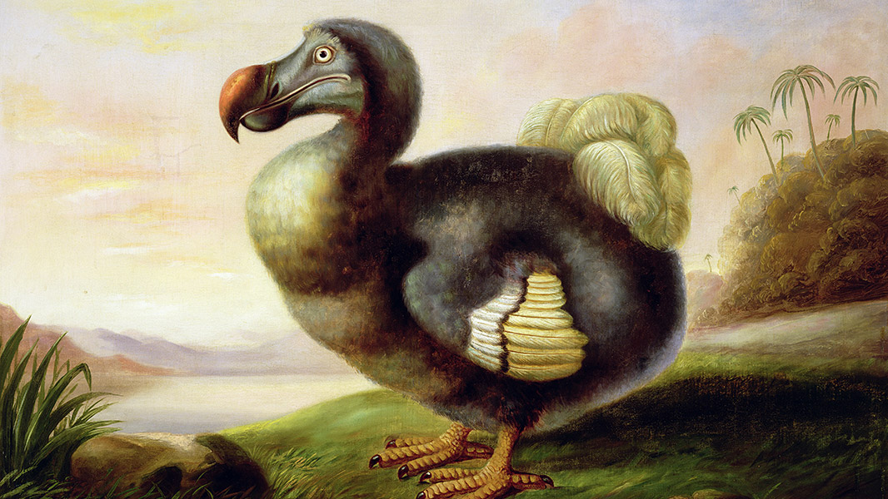

DODO

¿Qué es el Dodo?
El dodo o dronte (Raphus cucullatus) es una especie extinta de ave columbiforme de la subfamilia Raphinae. Era un ave no voladora endémica de la isla Mauricio,2? situada en el océano Índico (a 900 km de la isla de Madagascar).
El dodo, así como otras aves del océano Índico, había perdido la capacidad de volar para adaptarse a una vida terrestre.
El pariente genético más próximo al Dodo es el solitario de Rodrigues (de la isla Rodrigues), otra especie de ave extinta no voladora, ambas especies forman la subfamilia Raphinae.El pariente vivo más próximo al dodo es probablemente la paloma de Nicobar, una especie de paloma endémica de ciertas islas del océano Índico.
La extinción del dodo, a finales del siglo xvii,1?4? lo ha convertido en el arquetipo de especie extinta por causa de seres humanos.
Caracteristicas del Dodo
Como adaptación a la vida en la isla, los dodos perdieron la capacidad de vuelo, y con ello sufrieron una fuerte regresión en la musculatura y de sus ligamentos en el esternón, además de una transformación en el plumaje, que se volvió filamentoso; la cola se acortó extraordinariamente y quedó provista de solo unas pocas plumas arqueadas y fijadas débilmente.
Partiendo de esto, se puede decir que el dodo era un ave de aproximadamente un metro de altura, de plumaje grisáceo y con un peso que, de acuerdo a análisis realizados en 2012, rondaba los 10 kg; sin embargo otras publicaciones estiman un rango de entre 9,5 y 17,5 kg.8.
Su pico era muy largo, aproximadamente de 23 cm, y con una punta en forma de garfio que probablemente le permitía romper las cortezas de los cocos. Sus patas eran amarillas y robustas, con unas cuantas plumas rizadas en su parte de atrás. Tenía unas alas muy pequeñas, que unidas a su gran peso y un esternón insuficiente para soportarlo le hacían incapaz de volar.